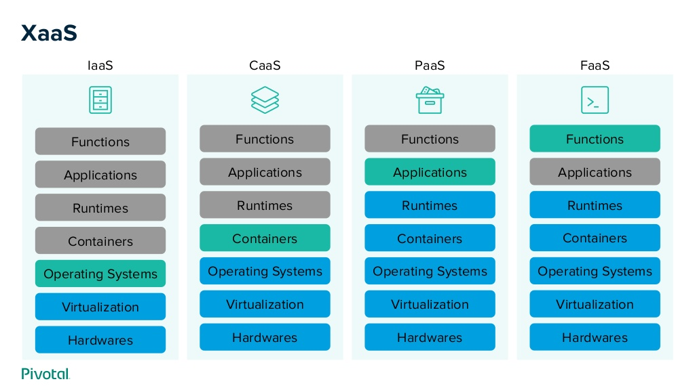
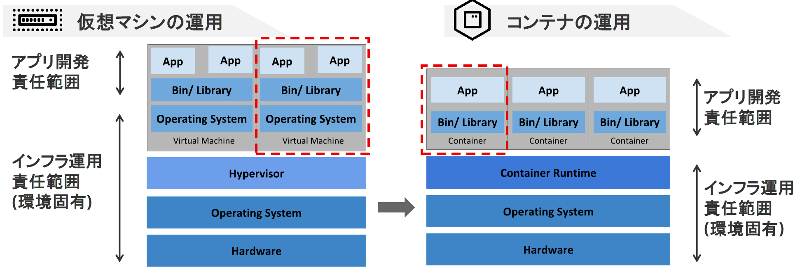

Docker入門
Dockerとは？
Linuxのコンテナ技術を使ったもので、仮想マシンとよく比較されるもの
仮想化サービスの比較
コンテナと仮想マシンの違い
コンテナ化の利点
- コード化されたファイルを共有することで、 どこでも誰でも同じ環境が作れる(IaC)
- 作成した環境を配布しやすい
- スクラップ＆ビルドが用意
Dockerの実行
docker run --rm --name my-nginx -d -p 8080:80 nginx
ブラウザで動作確認
http://localhost:8080各種コマンド
docker ps
docker exec -it {CONTAINER ID} bash
docker image ls
docker stop {CONTAINER ID}
docker rm {CONTAINER ID}
volumeのマウント
docker run -v $PWD:/usr/share/nginx/html -d -p 8080:80 nginx
イメージの作成
Dockerfileを作成して独自のイメージを作成
FROM node:lts-alpine
RUN npm install -g http-server
WORKDIR /app
COPY package*.json ./
RUN npm install
COPY . .
RUN npm run build
EXPOSE 8080
CMD [ "http-server", "dist" ]
イメージのビルド
docker build -t vueapp .
イメージの確認
docker image ls
コンテナの作成と起動
docker run -it -p 8080:8080 --rm --name vueapp-run vueapp
Docker compose
複数のコンテナを組み合わせた環境をYAMLで記述できる
version: "3"
services:
web:
build: ./vue-web
depends_on:
- json-server
container_name: "docker-vue"
ports:
- "8080:80"
json-server:
build: ./json-server
container_name: json-api
ports:
- "3000:3000"
volumes:
- ./json-server/db.json:/data/db.json
command: json-server --watch db.json --host 0.0.0.0
Docker-composeの起動
docker-compose up
各種コマンド
docker-compose up -d
docker-compose down
docker-compose build
docker-compose logs -f
Kubernetes

本番の運用などに使われるパワフルなツール、 詳細はまた次回・・・